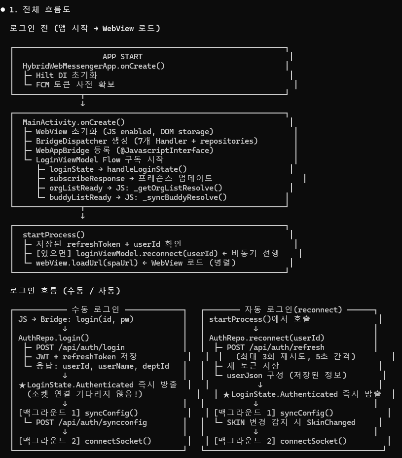

Flow: 로그인
사용자 입력(수동) / 앱 재시작(자동) 두 경우의 전체 시퀀스를 엔드투엔드로 보여줍니다.
A. 수동 로그인 (사용자 입력)
sequenceDiagram
autonumber
participant U as 사용자
participant JS as React LoginPage
participant B as WebAppBridge
participant D as BridgeDispatcher
participant A as AuthRepository
participant REST as REST
participant S as BinarySocket
participant VM as LoginViewModel
participant Main as MainActivity
U->>JS: userId / password 입력 + 로그인 버튼
JS->>B: postMessage({action:"login", userId, password})
B->>D: dispatch("login", params)
D->>Main: onLoginFromWeb(userId, password)
Main->>VM: viewModel.login(userId, password)
VM->>A: authRepo.login(userId, password)
A->>REST: POST /api/auth/login
REST-->>A: 200 {accessToken, refreshToken, userId, userName, deptId}
A->>A: EncryptedSharedPreferences에 토큰 저장
A-->>VM: LoginResult.Success(userJson)
VM->>VM: _loginState.value = Authenticated(userJson)
VM-->>Main: Flow 구독: LoginState.Authenticated
Main->>JS: window._loginResolve(userJson)
Note over JS: React가 즉시 SPA 메인으로 전환
par 백그라운드 (병렬)
A->>REST: POST /api/auth/syncconfig
REST-->>A: {configs, lastSyncTime}
A->>A: AppConfig.configCache 업데이트
and
A->>S: BinarySocketClient.connect()
S-->>A: WebSocket open
A->>S: sendHI() — 0x0A01
S-->>A: HI 응답 {sessionKey, userInfo, nick, config}
A->>A: jwtTokenDeferred.complete()
hiCompletedDeferred.complete() A-->>VM: LoggedIn(sessionData) 방출 end
hiCompletedDeferred.complete() A-->>VM: LoggedIn(sessionData) 방출 end
B. 자동 로그인 (앱 재시작)
sequenceDiagram
autonumber
participant App as HybridWebMessengerApp
participant Main as MainActivity
participant AC as AppConfig
participant VM as LoginViewModel
participant A as AuthRepository
participant REST as REST
participant S as BinarySocket
participant JS as React
App->>App: onCreate() → Hilt DI + DB 워밍업 + FCM
Main->>Main: onCreate() → WebView 초기화
Main->>AC: getSavedRefreshToken()
AC-->>Main: refreshToken (exists)
Main->>VM: reconnect(savedUserId)
VM->>A: authRepo.reconnect(savedUserId)
loop 최대 3회 (5초 간격)
A->>REST: POST /api/auth/refresh {refreshToken}
alt 성공
REST-->>A: 200 {accessToken, refreshToken}
Note over A: break
else 실패
A->>A: 5초 대기 후 재시도
end
end
alt 새 토큰 확보
A->>A: 새 토큰 저장
A->>A: userJson 구성 (저장된 userId/userName/deptId)
A-->>VM: LoginState.Authenticated 즉시 방출
Main->>JS: webView.loadUrl(spaUrl)
par 백그라운드
A->>REST: POST /api/auth/syncconfig
A->>S: connectSocket + sendHI()
end
else 3회 모두 실패
A-->>VM: LoginState.LoggedOut
Main->>JS: 로그인 화면 로드 + _restoreSavedLogin
end
C. 로그아웃
sequenceDiagram
participant JS
participant B as Bridge
participant A as AuthRepo
participant S as Socket
participant Main
JS->>B: postMessage({action:"logout"})
B->>A: requestLogout()
A->>S: disconnect() (TCP close)
A->>A: completedSyncs.clear()
userNameCache.clear() A->>A: accessToken / refreshToken 삭제 A-->>JS: window.postMessage({event:"neoDisconnected"}) A-->>JS: window._logoutResolve() A-->>JS: window._restoreSavedLogin({userId, password, savePassword, autoLogin}) Note over JS: 로그인 페이지로 전환
(저장된 ID/PW 자동 채움)
userNameCache.clear() A->>A: accessToken / refreshToken 삭제 A-->>JS: window.postMessage({event:"neoDisconnected"}) A-->>JS: window._logoutResolve() A-->>JS: window._restoreSavedLogin({userId, password, savePassword, autoLogin}) Note over JS: 로그인 페이지로 전환
(저장된 ID/PW 자동 채움)
주요 참조
AuthRepository.kt(로그인/토큰/sync)SocketSessionManager.kt(HI 핸드셰이크)LoginViewModel.kt(StateFlow)MainActivity.kt(startProcess(),onLoginFromWeb())
